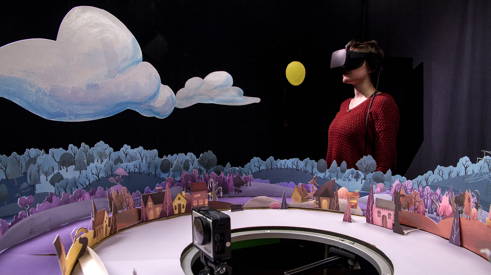
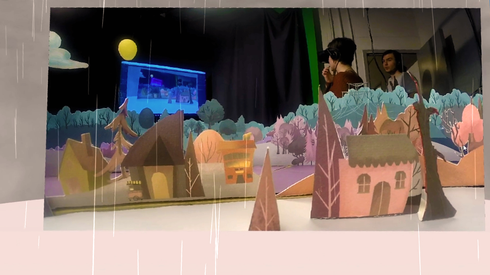

Paper Town VR
Emil Polyak, Patrick Fitzgerald, Simon Park, Connor Shipway, Hilary Smith, Julia Lineberry, Nattanun Sumpunkulpak, Monica Nguyen and Lucas Gargano
- 
- 
-

Experience Now
Description
Paper Town VR is an interactive art installation that immerses the user in a miniature 360° physical environment that can be experienced remotely through WebVR. The integral part of this project is a handcrafted artwork that adds a human touch to the experience. Utilizing a motorized camera as a scaled-down vantage point, the user can observe the scenery and goings-on of a tiny two-dimensional village as if it existed at a human scale. We created an even greater illusion of depth using warmer, more saturated colors to make objects come forward and cooler, more muted colors fade them back.
Inspired by the 1937 debut of the Disney Multi-Plane Camera, Paper Town VR enlists the effect of motion parallax to add spatial realism to the captured environment. This allows the viewer to use their natural perception of space to more intuitively understand the layout of the environment. Paper Town VR also opens up possibilities for a variety of hybrid and augmented realities, such as overlaying weather effects into the digital viewing space. Finally, since the video stream is live, it provides the opportunity to be used as a live set – objects or characters can be added to the set to appear to the viewer in real time.
Bios
Emil Polyak is an artist, developer and educator with more than two decades of experience in computer aided art and design. He started his career in Hungary, and since then, he has worked and taught in various universities and studios in New Zealand and Singapore. Currently he is an assistant professor at the College of Design, department of Art+Design at the NC State University in Raleigh, North Carolina. His research combining animations with interactive control for virtual impersonation in traditional puppetry culminated in a project published at the SIGGRAPH conference in 2012. Exploring the intersections of the physical and virtual world, Emil’s projects communicate real events and scenarios using an abstract computer generated language.
Patrick FitzGerald is an Associate Professor in the Department of Art + Design in the College of Design at NC State University. He has created and taught courses in illustration, multimedia and animation. In the course of his career, he has collaborated on large (and small) projects various communities, disciplines and individuals. Patrick has a BA from Southern Methodist University and an MFA from the Cranbrook Academy of Art. Prior to joining the faculty of the College of Design at NC State University, Professor Patrick FitzGerald served as an instructor, artist and manager at the Kodak Center for Creative Imaging in Camden, Maine. Professor FitzGerald has received national and international awards for his digital illustrations. In 2015 his team received an NSF grant to build a prototype of visual learning application that Fitzgerald invented.
Simon Park is a Senior at NC State’s college of Design, majoring in Arts & Design with a focus in illustration and motion graphics.
Connor Shipway is a Senior at NC State’s College of Design, majoring in Art & Design with a focus in interactive media an animation.
Hilary Smith is a Senior at NC State’s College of Design, majoring in Industrial Design and applying for her masters in Textile Technology and Art and Design. Interested in a concentration in wearable technology.
Julia Lineberry is a Senior at NC State’s College of Design, majoring in Art & Design with a focus in illustration.
Nattanun Sumpunkulpak is a Junior at Chulalongkorn University, majoring in Communication Design with a focus in illustration.
Monica Nguyen is a Senior at NC State’s College of Design, majoring in Art & Design with a focus in Sequential Imaging and Character Design.
Lucas T. Gargano is a Senior at NC State’s College of Design, majoring in Art & Design with a focus in Animation and New Media.